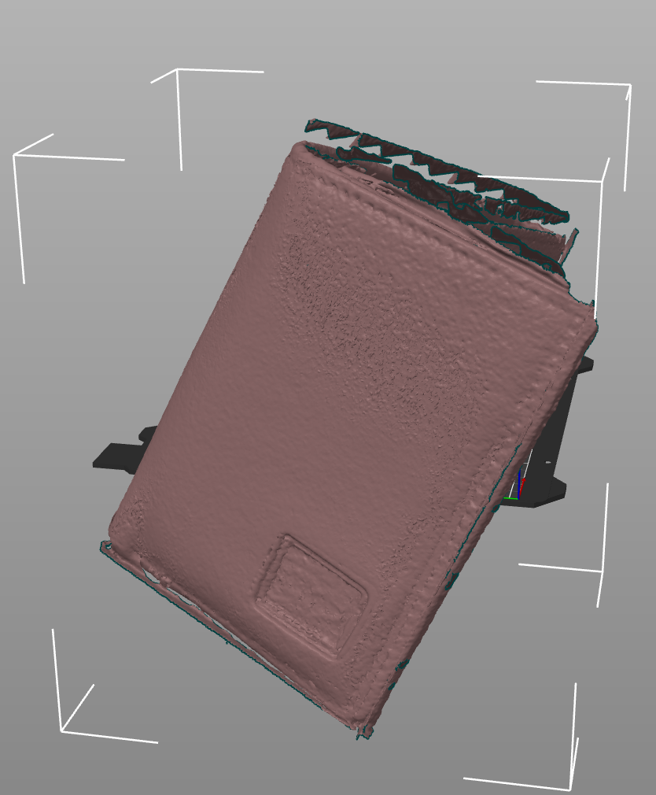

<div class="textcontainer">
<p class="margin"> </p>
<h3>Week 5: 3D Design & Printing</h3>
<h4> Model and 3D print something</h4>
<video src="./toothbrush.MOV" style = "width: 65%" controls></video>
<p>TOOTHBRUSH BOX</p>
I currently leave my toothbrush out in the open in a cup in my bathroom, which would be fine, except for the fact that the hallway bathroom for Holmes 3 is one of the nastiest I've ever seen in my life. There are constantly unflushed toilets, toilet paper strewn everywhere, just nasty things going on.
So recently, I've been thinking more about how safe it is to leave my toothbrush like that, exposed to all the germs and bacteria in the air. Thus, I decided to design a toothbrush box that would protect my toothbrush from the germs in the air while also allowing it to dry out properly.
To do this, I designed a box in Fusion 360 that has a lid that can be opened and closed, as well as holes on the sides to allow for airflow. The box is designed to fit a standard toothbrush, with enough space for the bristles to not touch the sides of the box. It was important to add some holes to allow for airflow,
as well as a small ridge on the bottom half to prevent the toothbrush from really sliding around,
as I didn't want the toothbrush to stay wet and potentially grow mold, which would've made a substractive method a bit more difficult. I also modeled a hinge for the first time, which was a little difficult because I incorrectly filleted the sides of the model at first which made it hard to extrude into the edge of the box before
Bobby helped me out. I'm a little curious as to how food safe the PLA filament is, and am kinda hoping I won't be ingesting hella microplastics by using it.
<a download href='./OralB+toothbrush+case+V.1.1.stl'>Download my STL file <\a>
<a download href='./toothbrush box.f3d'>Download my f3d file <\a>
<h4>3D Scan</h4>
I decided to try scanning my wallet using the Revo scanner, after some fails using a book and an airpod case that didn't turn out well because of their size and the framing. I took around 3 scans of the wallet, cleaned the scans up, then merged them together to get this:
<a download href='./sophia_wallet_resized.stl'>Download my wallet STL file <\a>
<p></p>
</div>